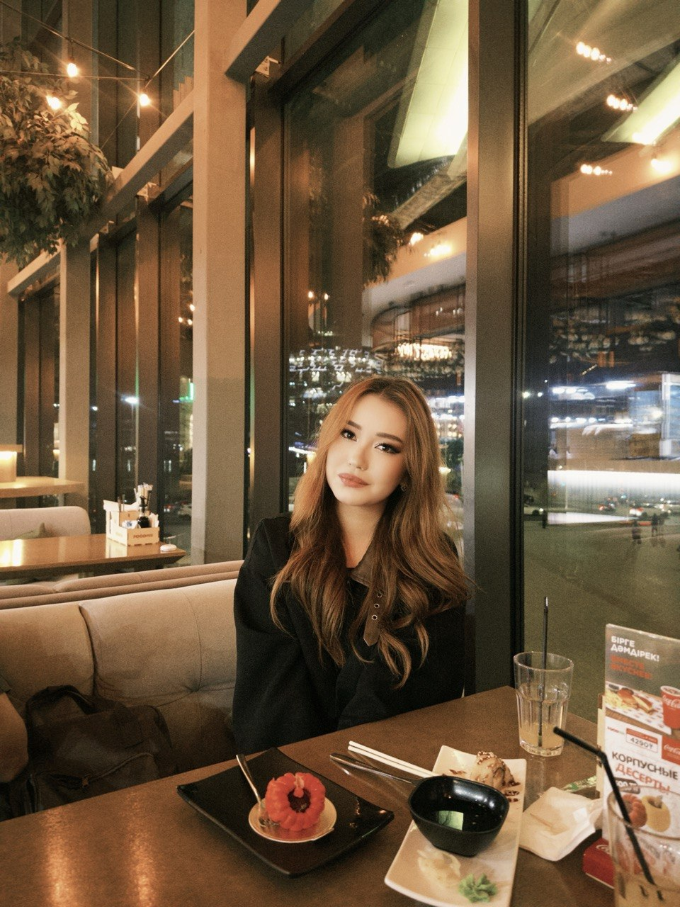

Frontend Developer & Astronomy Enthusiast
I'm a 19-year-old student from Astana, Kazakhstan. I built this astronomy website individually as part of the JavaScript Fundamentals assignment. I have a deep passion for space and technology. In my free time, I love exploring the mysteries of the universe, practicing new web development skills, listening to music, and reading books. My goal is to combine my love for space with clean, modern web design to create something truly inspiring.
I love reading about AI and practicing new AI tools and ideas in my free time. The future of technology fascinates me, and I enjoy staying updated with the latest innovations.
Listening to music helps me relax and stay focused while coding. It's my daily source of inspiration and energy. I enjoy a wide variety of genres, from lo-fi to rock.
Books are my way of exploring new ideas and improving myself every day. Science fiction, technology, and astronomy books are my absolute favorites.
I build clean, responsive, and interactive websites using HTML, CSS, and JavaScript. I love turning creative ideas into working web experiences.
I spend a lot of time researching the cosmos. I am fascinated by black holes, nebulae, and the possibility of life on other planets.
I am always learning something new, whether it's a new programming framework, a new AI tool, or a new fact about the universe.
I created Astronomad not just to complete an assignment, but to share my passion for the cosmos. I wanted to build a website that feels like a journey through space — a place where people who love astronomy, just like me, can come to explore, learn, and be inspired.
This site is designed for anyone who looks up at the night sky and wonders what's out there. Whether you're a student, a space enthusiast, or just curious about the universe, I hope you find something here that sparks your imagination.
"The cosmos is within us. We are made of star-stuff. We are a way for the universe to know itself."
— Carl Sagan